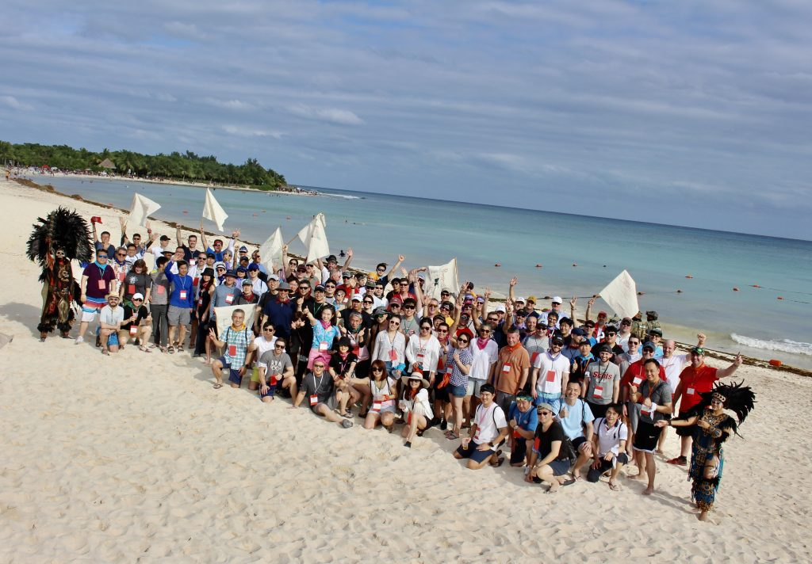

Our Story
Pacific Trails Resort began with a simple idea: to create a peaceful retreat where nature enthusiasts and adventure seekers could disconnect from the everyday and immerse themselves in breathtaking landscapes. Our dedicated team of outdoor professionals ensures that every guest experiences the perfect balance of comfort and wilderness exploration. From guided hikes to cozy yurt stays, we are committed to providing memorable experiences that nurture both body and soul. Sustainability and environmental stewardship are at the heart of everything we do, ensuring that future generations can enjoy these trails and vistas just as we do today.
Meet Our Team
Our staff combines expertise in hospitality, outdoor safety, and nature education. Each team member brings a passion for the outdoors and a commitment to delivering exceptional service. Whether it’s guiding a sunrise hike or preparing a farm-to-table breakfast, we pride ourselves on creating personalized experiences for every guest.
